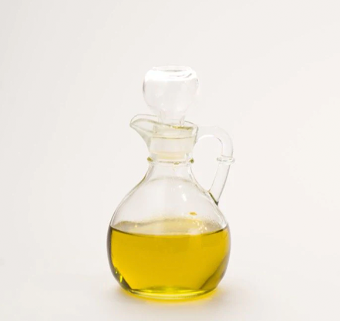
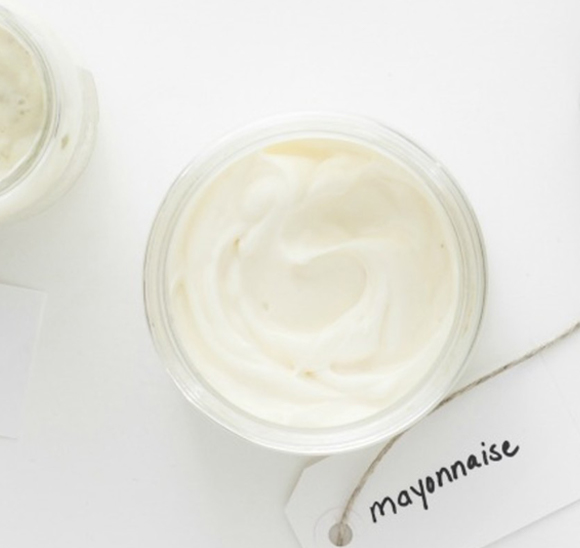
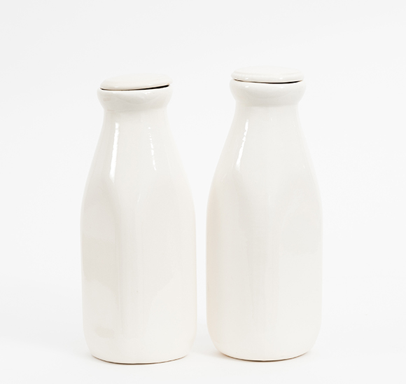
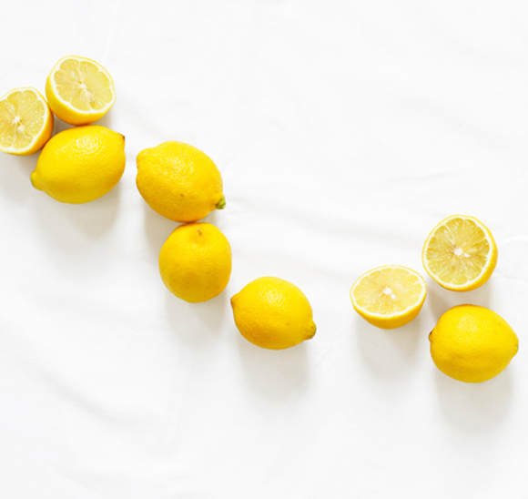

영양 공급
식품의 섭취 가능 기한을 의미하는 것은 유통기한이 아닌 소비기한입니다.
소비기한이 지나 섭취할 수 없는 식품을 활용하여 영양을 공급할 수 있습니다.
식품들의 다양한 재활용 방법을 알아보세요.

올리브유
샴푸에 올리브유를 조금 넣어 머리를 감으면 머리카락이 부드러워지는
효과를 얻을 수 있습니다. 그리고 로션에 올리브유를 조금 넣어 바르면
촉촉한 피부를 유지할 수 있습니다.

마요네즈
머리카락이 젖은 상태에서 두피를 제외한 손상된 부분에 마요네즈를
발라줍니다. 1시간 정도 방치하고 씻어내면 머리카락에 영양분이 공급되어
부드러운 머릿결이 됩니다.

우유
따듯하게 데운 우유를 화장 솜에 묻혀 피부 결을 닦아내면 묵은 각질을
제거하는 데 효과적입니다. 단, 유통기한이 너무 오래 지나 상한 냄새가
많이 나는 우유는 사용하지 않는 것이 좋습니다.

레몬
까매진 무릎이나 팔꿈치를 레몬 껍질로
닦아주면 미백 효과를 볼 수 있습니다.